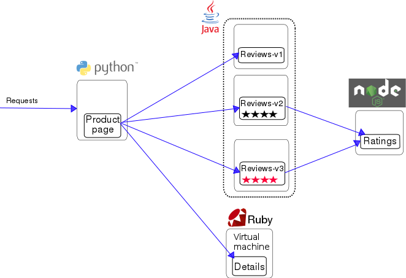

Run Istio With Kubevirt
On this blog post, we are going to deploy virtual machines with the KubeVirt project and insert them into the Istio service mesh.
Some information about the technologies we are going to use in this blog post.
Kubernetes
Production-Grade Container Orchestration.
Kubernetes is an open-source system for automating deployment, scaling, and management of containerized applications.
Kubeadm
kubeadm helps you bootstrap a minimum viable Kubernetes cluster that conforms to best practices.
Calico
Calico provides secure network connectivity for containers and virtual machine workloads.
Calico creates and manages a flat layer 3 network, assigning each workload a fully routable IP address. Workloads can communicate without IP encapsulation or network address translation for bare metal performance, easier troubleshooting, and better interoperability. In environments that require an overlay, Calico uses IP-in-IP tunneling or can work with other overlay networking such as flannel.
KubeVirt
Virtualization API for kubernetes in order to manage virtual machines
KubeVirt technology addresses the needs of development teams that have adopted or want to adopt Kubernetes but possess existing Virtual Machine-based workloads that cannot be easily containerized. More specifically, the technology provides a unified development platform where developers can build, modify, and deploy applications residing in both Application Containers as well as Virtual Machines in a common, shared environment.
Benefits are broad and significant. Teams with a reliance on existing virtual machine-based workloads are empowered to rapidly containerize applications. With virtualized workloads placed directly in development workflows, teams can decompose them over time while still leveraging remaining virtualized components as is comfortably desired.
Istio
An open platform to connect, manage, and secure microservices.
Istio provides an easy way to create a network of deployed services with load balancing, service-to-service authentication, monitoring, and more, without requiring any changes in service code. You add Istio support to services by deploying a special sidecar proxy throughout your environment that intercepts all network communication between microservices, configured and managed using Istio’s control plane functionality.
Bookinfo application
A simple application that displays information about a book, similar to a single catalog entry of an online book store. Displayed on the page is a description of the book, book details (ISBN, number of pages, and so on), and a few book reviews.
The Bookinfo application is broken into four separate microservices:
productpage. The productpage microservice calls the details and reviews microservices to populate the page.details. The details microservice contains book information.reviews. The reviews microservice contains book reviews. It also calls the ratings microservice.ratings. The ratings microservice contains book ranking information that accompanies a book review.

Note: This demo is going to be deployed on a kubernetes 1.10 cluster.
Requirements
- docker
- kubeadm
Follow this document to install everything we need for the POC
Deployment
For the POC we clone this repo
The repo contains all the configuration we need to deploy KubeVirt and Istio.
- kubevirt.yaml
- istio-demo-auth.yaml
It also contains the deployment configuration of our sample application.
- bookinfo.yaml
- bookinfo-gateway.yaml
Run the bash script
cd kubevirt-istio-poc
./deploy-istio-poc.sh
Demo application
We are going to use the bookinfo sample application from the istio webpage.
The following yaml will deploy the bookinfo application with a ‘small’ change the details service will run on a virtual machine inside our kubernetes cluster!
Note: it will take like 5 minutes for the application to by running inside the virtual machine because we install git and ruby, then clone the istio repo and start the application.
POC details
Lets start with the bash script:
#!/bin/bash
set -x
kubeadm init --pod-network-cidr=192.168.0.0/16
yes | cp -i /etc/kubernetes/admin.conf $HOME/.kube/config
kubectl apply -f https://docs.projectcalico.org/v3.0/getting-started/kubernetes/installation/hosted/kubeadm/1.7/calico.yaml
while [[ $(kubectl get po -n kube-system | grep kube-dns | grep Running | wc -l) -eq 0 ]]
do
echo Calico deployment is no ready yet.
sleep 5
done
echo Calico is ready.
echo Taint the master node.
kubectl taint nodes --all node-role.kubernetes.io/master-
echo Deploy kubevirt.
kubectl apply -f https://github.com/kubevirt/kubevirt/releases/download/v0.7.0/kubevirt.yaml
echo Deploy istio.
kubectl apply -f istio-demo-auth.yaml
echo Add istio-injection to the default namespace.
kubectl label namespace default istio-injection=enabled
while [[ $(kubectl get po -n istio-system | grep sidecar-injector | grep Running | wc -l) -eq 0 ]]
do
echo Istio deployment is no ready yet.
sleep 5
done
echo Istio is ready.
sleep 20
echo Deploy the bookinfo example application
kubectl apply -f bookinfo.yaml
kubectl apply -f bookinfo-gateway.yaml
The follow script create a kubernetes cluster using the kubeadm command, deploy calico as a network CNI and taint the master node (have only one node in the cluster).
After the cluster is up the script deploy both istio with mutual TLS and kubevirt projects, it also add the auto injection to the default namespace.
At last the script deploy the bookinfo demo application that we change a bit.
Lets take a closer look in the virtual machine part inside the bookinfo.yaml file
##################################################################################################
# Details service
##################################################################################################
apiVersion: v1
kind: Service
metadata:
name: details
labels:
app: details
spec:
ports:
- port: 9080
name: http
selector:
app: details
---
apiVersion: kubevirt.io/v1alpha2
kind: VirtualMachineInstance
metadata:
creationTimestamp: null
labels:
special: vmi-details
app: details
version: v1
name: vmi-details
spec:
domain:
devices:
disks:
- disk:
bus: virtio
name: registrydisk
volumeName: registryvolume
- disk:
bus: virtio
name: cloudinitdisk
volumeName: cloudinitvolume
interfaces:
- name: testSlirp
slirp: {}
ports:
- name: http
port: 9080
machine:
type: ""
resources:
requests:
memory: 1024M
networks:
- name: testSlirp
pod: {}
terminationGracePeriodSeconds: 0
volumes:
- name: registryvolume
registryDisk:
image: kubevirt/fedora-cloud-container-disk-demo:latest
- cloudInitNoCloud:
userData: |-
#!/bin/bash
echo "fedora" |passwd fedora --stdin
yum install git ruby -y
git clone https://github.com/istio/istio.git
cd istio/samples/bookinfo/src/details/
ruby details.rb 9080 &
name: cloudinitvolume
status: {}
---
..........
Details:
- Create a network of type pod
networks:
- name: testSlirp
pod: {}
- Create an interface of type slirp and connect it to the pod network by matching the pod network name
- Add our application port
interfaces:
- name: testSlirp
slirp: {}
ports:
- name: http
port: 9080
- Use the cloud init script to download install and run the details application
- cloudInitNoCloud:
userData: |-
#!/bin/bash
echo "fedora" |passwd fedora --stdin
yum install git ruby -y
git clone https://github.com/istio/istio.git
cd istio/samples/bookinfo/src/details/
ruby details.rb 9080 &
name: cloudinitvolume
POC Check
After running the bash script the environment should look like this
NAME READY STATUS RESTARTS AGE
productpage-v1-7bbdd59459-w6nwq 2/2 Running 0 1h
ratings-v1-76dc7f6b9-6n6s9 2/2 Running 0 1h
reviews-v1-64545d97b4-tvgl2 2/2 Running 0 1h
reviews-v2-8cb9489c6-wjp9x 2/2 Running 0 1h
reviews-v3-6bc884b456-hr5bm 2/2 Running 0 1h
virt-launcher-vmi-details-94pb6 3/3 Running 0 1h
Let’s find the istio ingress service port
# kubectl get service -n istio-system | grep istio-ingressgateway
istio-ingressgateway LoadBalancer 10.97.163.91 <pending> 80:31380/TCP,443:31390/TCP,31400:31400/TCP 3h
Then browse the following url
http://<k8s-node-ip-address>:<istio-ingress-service-port-exposed-by-k8s>/productpage
Example:
http://10.0.0.1:31380/productpage
Conclusions
This POC show how we can use KubeVirt with Istio to integrate the Istio service mesh to virtual machine workloads running inside our kubernetes cluster.